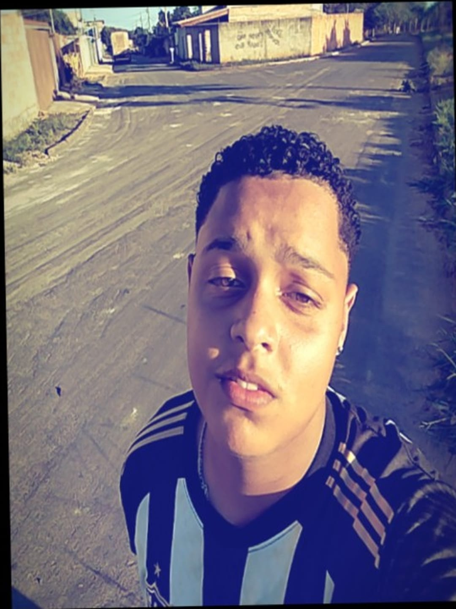

EM ANDAMENTO
Terminando a escola
Também estou finalizando o curso Técnico em Desenvolvimento de Sistemas.
Ensino técnicoDISPONÍVEL PARA APRENDER E COLABORAR
Finalizando o curso técnico em Desenvolvimento de Sistemas
Estou concluindo minha formação técnica, participo da Liga STEAM e, em 2026, conquistei o 3º lugar no JEMG.

const dev = {
nome: 'João Lucas',
foco: 'Desenvolvimento Web',
aprendendo: [
'JavaScript',
'React'
],
motivação: 'sempre evoluir'
};01 / SOBRE MIM
Estou finalizando o curso Técnico em Desenvolvimento de Sistemas e participo da Liga STEAM.
Em 2026, conquistei o 3º lugar no JEMG. Essa conquista faz parte da minha trajetória de aprendizado.
OBJETIVO PROFISSIONAL
Busco crescer na área de tecnologia, aprender com novos desafios e contribuir com dedicação em projetos de desenvolvimento. Cada coisa que aprendo e crio me aproxima de construir soluções úteis de verdade.
02 / HABILIDADES
Uma base em construção, desenvolvida com estudo, prática e projetos.
03 / FORMAÇÃO
Estudo contínuo, prática e troca de conhecimento fazem parte do caminho.
EM ANDAMENTO
Também estou finalizando o curso Técnico em Desenvolvimento de Sistemas.
Ensino técnico04 / PROJETOS
Clique em um cartão para conhecer meus projetos e minha participação na Liga STEAM.
Jogo de memória que desenvolvi: encontre os pares e teste sua concentração.
Criei vários quizzes interativos para responder perguntas e testar conhecimentos.
Participo da Liga STEAM como parte da minha trajetória de aprendizado.
Conquista do 3º lugar nos Jogos Escolares de Minas Gerais, em 2026.
Organizador de tarefas com foco em simplicidade e produtividade no dia a dia.
Interface de consulta meteorológica com visualização clara das condições do tempo.
Landing page conceitual para uma iniciativa de consumo local e sustentável.
Jogo da memória e quizzes feitos por mim; também participo da Liga STEAM e conquistei o 3º lugar no JEMG em 2026. Os outros cartões são ideias demonstrativas.
05 / CONTATO
Estou aberto a aprender, colaborar e conhecer novos projetos.
Curvelo, MG · joreucriaderadio@gmail.com · (38) 99733-1210